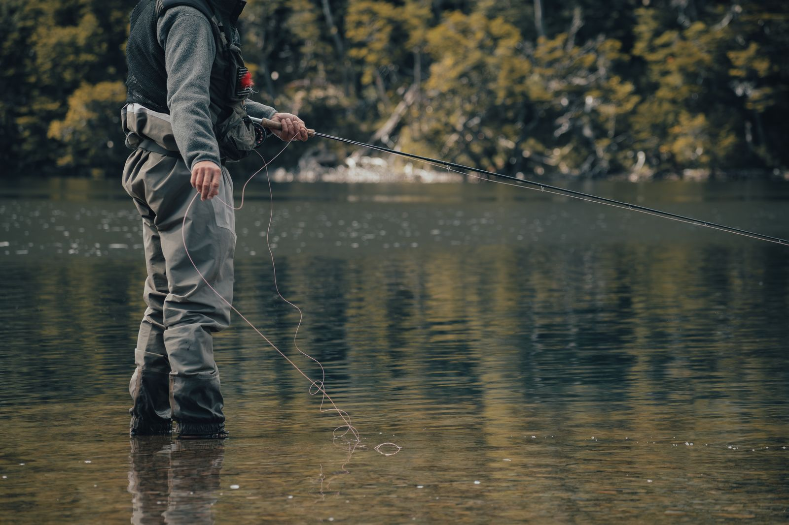

The Breede River runs practically past our front door, and it remains one of the Western Cape's most underrated fisheries. Winter changes the game — the water is cooler, the fish are slower, and the anglers who adapt keep catching while everyone else stays home. Here's our local rundown.
Carp — the winter reliables
Carp keep feeding right through winter in the Breede's slower pools, they just do it on their own schedule. Fish the warmest part of the day — late morning to mid-afternoon — and slow everything down. Classic mielie-bomb ground feed with sweetcorn, or a simple mieliepap and worm cocktail on the hook, fished patiently on the bottom, still produces the goods. If the water is discoloured after rain, add a strong-smelling attractant to your ground feed.
Largemouth bass — deep and slow
The bass haven't gone anywhere; they've just moved deeper and their metabolism has slowed. Forget fast spinnerbait retrieves until spring. Winter bass want a slow-rolled soft plastic, a jig crawled along the bottom, or a suspending jerkbait with long pauses — count to five between twitches, then count to ten. Focus on deeper structure: drop-offs, sunken timber and the outside bends of the river. The dams and still backwaters around the valley fish better than fast current this time of year.
Bluegill — great for the kids
When you're introducing children to fishing, bluegill are the answer year-round. A small hook, a piece of earthworm and a float near reeds or structure will keep the rods bending and the kids hooked — literally. Light tackle makes even a hand-sized bluegill feel like a trophy.
Sharptooth catfish (barber) — the surprise fighters
Barber slow down in the cold but don't stop. Big smelly baits — chicken liver, sardine chunks or a bunch of earthworms — fished on the bottom in the deeper holes can still connect you to the hardest-fighting fish in the river. Use strong hooks and at least 15 lb line; these fish do not come quietly.
Winter checklist for the Breede
- Licence: make sure your freshwater angling licence is current — we can advise in-store.
- Timing: 10 am – 3 pm beats dawn patrol in winter. Let the sun warm the shallows.
- Tackle: lighter line and smaller baits — cold fish are fussy fish.
- Warmth: beanie, gloves and a flask. Cold hands tie bad knots.
Not sure what to rig? Bring your tackle box into the shop — our fishing department will sort you out with the right hooks, baits and local knowledge for exactly where you're planning to fish.
Gear up for the Breede
Rods, reels, tackle, bait and honest local advice — all in-store at 8 Voortrekker Ave.
Ask What's Biting Fishing Gear